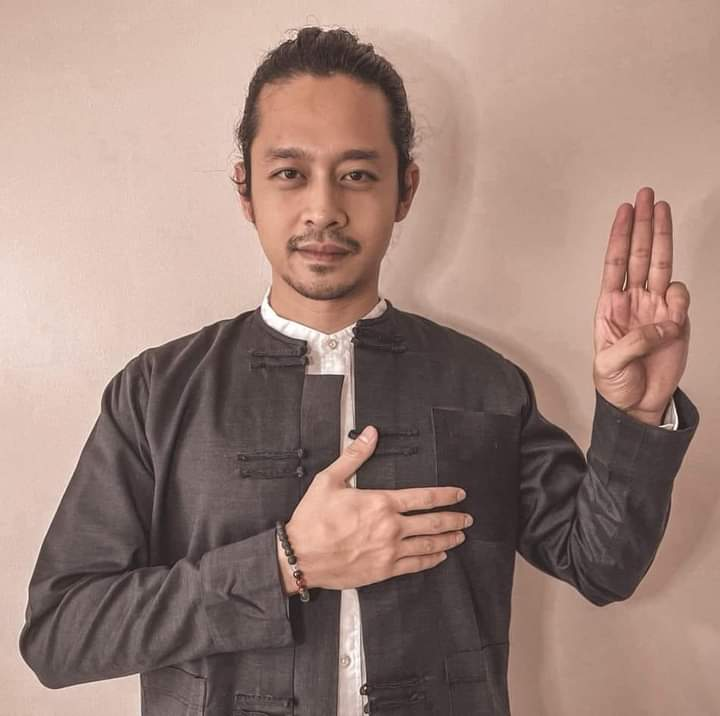
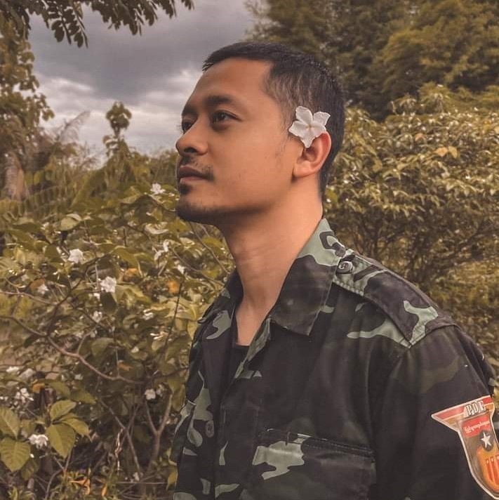

Star Awards 2018 - Best Actor Award (Bagan Myo Thu Drama Series)
Description
Daung (ဒေါင်း; born Thuya Aung; 30 March 1990) is a Burmese film and television actor and former footballer. He first gained widespread fame in Myanmar through his role in the 2019 film The Only Mom. Daung is known for his method acting performances, in contrast to the more typical melodramatic forms of acting popular in Burmese cinema.
Eraly Life
Daung was born on 30 March 1990 in Minhla, Pyay District, Bago Division, Burma. He is the 4th son of 5 siblings. He moved to Mandalay in the second grade.
Club career
Southern Myanmar F.C
Daung moved to Yangon to pursue a singing career, and subsequently signed a 3-year contract in 2010 to play for Southern Myanmar F.C as a striker.
Sometimes play with the colours (painting) and sometimes play with the words (poems).
Trailer
Political activities
Following the 2021 Myanmar coup d'état, he participated in the anti-coup movement both in person at rallies and through social media. Denouncing the military coup, he took part in protests, starting in February. He joined the "We Want Justice" three-finger salute movement. The movement was launched on social media, and many celebrities have joined the movement.
On 12 April 2021, warrants for his arrest were issued under Section 505 (a) of the penal code by the State Administration Council for speaking out against the military coup. Along with several other celebrities, he was charged with calling for participation in the Civil Disobedience Movement (CDM) and damaging the state's ability to govern, with supporting the Committee Representing Pyidaungsu Hluttaw, and with generally inciting the people to disturb the peace and stability of the nation.


Painting
“Absolutely, I am an artist – a poet, painter, musician. Above everything, I enjoy creating things that I believe in. I have always preferred to stay closer to artists and celebrities who care more about their work than public attention.”
“I was inspired by the late musician Htoo Eain Thin who once said that each artist should have his or her own ethic in life, and stay true to this despite the challenges and obstacles we face. I have my own ethic to which I try and stay true to, and I hope this work captures it.”